철도신호기사 (2007-09-02 기출문제)
1과목: 전자공학
1. 다음 중 PN 접합 다이오드에서 공핍층이 생기는 원인으로 옳은 것은?
- 전자와 정공의 확산에 의해서 생긴다.
- (-)전압만 가할 때 생긴다.
- 다수 반송자가 많이 모여 있는 순간 생긴다.
- 전압을 걸지 않을 때 생긴다.
(정답률: 알수없음)

2. 차동 증폭기에서 우수한 차동 특성을 나타낼 수 있는 동상 제거비의 조건으로 옳은 것은?
- 클수록 좋다.
- 10 미만 이어야 좋다.
- 1 이하 이어야 좋다.
- 0(zero) 이어야 좋다.
(정답률: 알수없음)
3. 반송파 ec=Eccos(wct)이고, 신호파 es=Escos(wst) 일 때 진폭 변조된 피변조파의 진폭 E는?
- E = Es + Eccos(wct)
- E = Ec + Essin(wst)
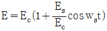
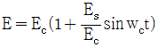
(정답률: 알수없음)
4. 다음 중 트랜지스터의 베이스 폭을 얇게 하는 이유는 어떤 특성을 좋게 하기 위한 것인가?
- 온도특성
- 주파수특성
- 잡음특성
- 전도특성
(정답률: 알수없음)
5. JK 플립플롭에 대한 설명으로 틀린 것은?
- J=1, K=0 이면, 출력(Q)은 1 이다.
- J=1, K=1 이면, 출력(Q)은 토글 된다.
- J=0, K=1 이면, 출력(Q)은 0 이다.
- J=0, K=0 이면, 출력(Q)은 변한다.
(정답률: 알수없음)
6. 부궤환 증폭기의 장점으로 볼 수 없는 것은?
- 증폭 동작이 안정된다.
- 전력 효율이 개선된다.
- 왜곡이 감소한다.
- 주파수 특성이 개선된다.
(정답률: 알수없음)
7. 다음 회로에서 저항 R의 양단 전압은 몇 V 인가? (단, 저항 R은 1㏀)
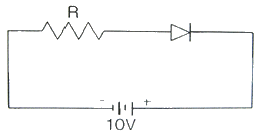
- 0
- 1
- 5
- 100
(정답률: 알수없음)
8. 전압이득이 A인 연산증폭기 회로에서 입력을 Vi라 하면 출력 Vo는?
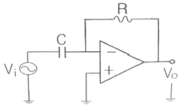
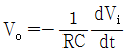
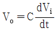
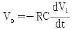
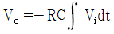
(정답률: 알수없음)
9. PN 접합 다이오드에 대한 설명으로 적합하지 않은 것은?
- 커패시터 등과 결합하여 교류를 직류로 정류할 수 있다.
- 단방향 특성을 갖는다.
- 방향성을 이용해 주로 직류를 교류로, 교류를 직류로 정류하는 데 사용된다.
- PN 접합에 역방향 전압을 가하면 전류가 흐르지 않는다.
(정답률: 알수없음)
10. 어떤 증폭기의 전압이득이 250 인 경우 약 몇 ㏈에 해당 되는 가?
- 48㏈
- 33㏈
- 24㏈
- 15㏈
(정답률: 알수없음)
11. 다음 중 이상적인 연산증폭기의 특성으로 틀린 것은?
- 입력 바이어스 전류는 0(zero) 이다.
- 입력저항은 무한대이다.
- 출력저항은 무한대이다.
- 전압이득은 무한대이다.
(정답률: 알수없음)
12. 그림과 같은 회로는 어떤 회로인가?
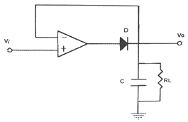
- DC 전압플로워
- 피크검출기
- 대수증폭기
- 전류-전압변환기
(정답률: 알수없음)
13. 다음 중 아날로그 신호를 디지털 신호로 변환할 때 사용하는 회로는?
- 미분회로
- 시미트 트리거 회로
- 클램프회로
- 적분회로
(정답률: 알수없음)
14. 다음 중 프로그래머블 논리장치가 아닌 것은?
- PROM
- PAL
- PLA
- ROM
(정답률: 알수없음)
15. 다음 중 정현파 발진기에 속하지 않는 것은?
- 수정발진기
- 블로킹발진기
- LC발진기
- CR발진기
(정답률: 알수없음)
16. 다음 중 FM을 AM과 비교할 때 틀린 것은?
- 잡음이 적다.
- 에코의 영향이 많다.
- 점유 주파수 대역이 넓다.
- 초단파대 통신에 적합하다.
(정답률: 알수없음)
17. 이상형 RC 발진회로의 발진주파수를 표시하는 식은?
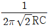
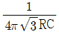
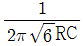
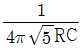
(정답률: 알수없음)
18. 다음 중 스위칭 소자가 갖추어야 할 조건으로 적합한 것은?
- 상승시간이 길어야 한다.
- 턴-오프 시간이 느려야 한다.
- 축적시간이 길어야 한다.
- 상승속도가 빨라야 한다.
(정답률: 알수없음)
19. 다음 중 LC 발진회로의 주파수 안정도를 높이기 위한 방법으로 적합한 것은?
- 바이어스를 걸어준다.
- 동조회로의 Q를 높인다.
- 동조회로의 공진주파수를 높인다.
- 동조회로의 R 성분을 키운다.
(정답률: 알수없음)
20. 다음 중 아날로그 변조 방식이 아닌 것은?
- 펄스부호변조
- 진폭변조
- 위상변조
- 주파수변조
(정답률: 알수없음)
2과목: 회로이론 및 제어공학
21. △결선된 대칭 3상 부하가 있다. 역률이 0.8(지상)이고, 전소비전력이 1800[W]이다. 한 상의 선로저항이 0.5[Ω]이고 발생하는 전선로손실이 50[W]이면 부하단자의 전압[V]은?
- 630
- 876
- 300
- 225
(정답률: 알수없음)
22. 파형이 반파 정류파 일 때 파고율은?
- 0.5
- 2.0
- 1.57
- 1.73
(정답률: 알수없음)
23. RL 직렬회로에
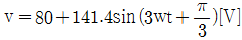
를 가할 때 전류[A]의 실효값은 약 얼마인가? (단, R=4[Ω], wL=1[Ω] 이다.)- 24.2
- 26.3
- 28.3
- 30.2
(정답률: 알수없음)
24. 3상 불평형 전압에서 영상전압이 140[V]이고, 정상전압이 600[V], 역상전압이 280[V] 이라면 전압의 불평형율은?
- 2.144
- 0.566
- 0.466
- 0.233
(정답률: 알수없음)
25. △결선된 3상 회로에서 상전류가 다음과 같을 때 선전류 I1, I2, I3 중에서 그 크기가 가장 큰 것은 몇 [A]인가?
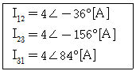
- 2.31
- 4.0
- 6.93
- 8.0
(정답률: 알수없음)
26. 다음 결합 회로의 4단자 정수 ABCD 파라미터 행렬은?
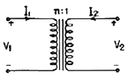
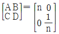
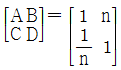
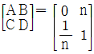
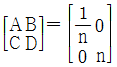
(정답률: 알수없음)
27. R=100[Ω], C=30[㎌]의 직렬회로에 f=60[㎐], V=100[V]의 교류전압을 가할 때 전류[A]는 약 얼마인가?
- 133.5
- 88.4
- 75
- 0.75
(정답률: 알수없음)
28. 무손실 선로에서 단위 길이에 대한 직렬 인덕턴스를 L, 병렬 커패시턴스를 C, 감쇠정수를 α, 위상 정수를 β, 전원의 각 주파수를 ω라 할 때 다음 관계가 성립하는 것은?
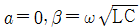
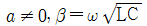
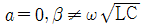
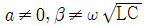
(정답률: 알수없음)
29. 다음 내용 중 옳지 않은 것은?
- 회로의 임펄스 응답은 회로도를 알면 결정된다.
- 회로의 임펄스 응답과 입력을 알면 출력을 알 수 있다.
- 초기조건에 따라 임펄스 응답이 결정된다.
- 출력은 입력과 초기조건에 따라 결정된다.
(정답률: 알수없음)
30. R-L-C 직렬회로의 과도상태에서 저항의 값이 다음 중 어느 값일 때 진동이 되는가?
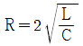
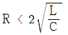
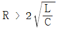
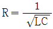
(정답률: 알수없음)
31.
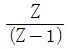
에 대응되는 라플라스 변환함수는?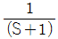
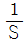
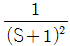
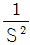
(정답률: 알수없음)
32.
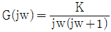
의 나이퀴스드 선도를 도시한 것은? (단, K ＞ 0)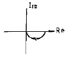
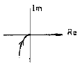
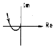
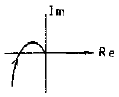
(정답률: 알수없음)
33. 그림의 신호 흐름 선도에서
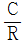
를 구하면?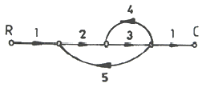
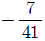
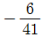
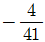
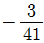
(정답률: 알수없음)
34. 프로세스 제어의 제어량이 아닌 것은?
- 물체의 자세
- 압력
- 유량
- 온도
(정답률: 알수없음)
35. 다음의 전달함수를 갖는 회로가 진상 보상회로의 특성을 가지려면 그 조건은 어떠한가?
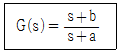
- a ＞ b
- a ＜ b
- a ＞ 1
- b ＞ 1
(정답률: 알수없음)
36. 다음 방정식으로 표시되는 제어계가 있다. 이 계를 상태방정식
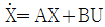
로 나타내면 A는 어떻게 되는가?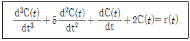
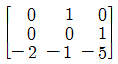
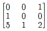
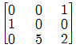
(정답률: 알수없음)
37. 그림과 같은 미분요소에 입력으로 단위계단 함수를 사용하면 출력 파형으로 알맞은 것은?
- 임펄스파형
- 사인파형
- 삼각파형
- 톱니파형
(정답률: 알수없음)
38. 다음 진리표의 게이트(gate)는?
- AND
- OR
- NOR
- NAND
(정답률: 알수없음)
39. 그림과 같은 블록선도로 표시되는 제어계는?
- 0형
- 1형
- 2형
- 3형
(정답률: 알수없음)
40. G(s)H(s)가 다음과 같이 주어지는 부궤환계에서 근궤적 점근선의 실수축과의 교차점은?
- -3
- -2
- -1
- 0
(정답률: 알수없음)
3과목: 신호기기
41. 유도 전동기를 기동하여 △를 Y로 전환했을 때 토크는 몇 배가 되는가?
- 1/3
- 3
- √3
- 1/√3
(정답률: 알수없음)
42. 권선형 유도 전동기의 기동법은?
- Y-△기동
- 기동보상기에 의한 기동
- 2차 저항기동
- 직입기동
(정답률: 알수없음)
43. 직류전동기에서 보극을 사용하는 가장 적합한 이유는?
- 역회전방지
- 정류개선
- 섬락방지
- 불꽃방지
(정답률: 알수없음)
44. 변압기의 내부 고장 보호에 쓰이는 계전기는?
- O.C.R
- 역상계전기
- 접지계전기
- 부흐홀쯔계전기
(정답률: 알수없음)
45. 교류 NS형 전기 전철기에 사용하는 전동기는?
- 직류분권 전동기
- 교류 3상유도전동기
- 콘덴서 기동형 유도전동기
- 가동복권 전동기
(정답률: 알수없음)
46. 유도 전동기에서 비례추이가 되지 않는 것은?
- 효율
- 역률
- 전류
- 동기와트
(정답률: 알수없음)
47. 다음 중 건널목 전동차단기에 대한 설명으로 옳은 것은?
- 제어전압은 정격값의 0.9~1.2배 이다.
- 하강시간은 12초 이하 이다.
- 상승시간은 8±2초 이하 이다.
- 정격전압은 교류 24[V] 이다.
(정답률: 알수없음)
48. 직류 전동기의 속도제어 방법 중 광범위한 속도 제어가 가능하며 운전 효율이 가장 좋은 것은?
- 직렬저항제어
- 전압제어
- 병렬저항제어
- 계자제어
(정답률: 알수없음)
49. 여자 전류가 끊어진 후 얼마간 시간(시소)이 경과된 후부터 N 접점이 낙하하는 계전기는?
- 유극 3위 계전기
- 무극선조 계전기
- 완동 계전기
- 완방계전기
(정답률: 알수없음)
50. 출력 3[㎾], 1500[rpm]인 유도전동기의 토크는 약 몇 [㎏ㆍm] 인가?
- 4.22
- 3.51
- 2.43
- 1.95
(정답률: 알수없음)
51. 8극 60[㎐], 400[㎾], 유도전동기가 있다. 전부하시의 슬립이 2.5[%]인 때 회전수[rpm]는 약 얼마인가?
- 977
- 877
- 777
- 677
(정답률: 알수없음)
52. 진행신호 현시일 때 ATS-S형의 차상자 발진주파수[㎑]는?
- 78
- 98
- 1⑤
- 130
(정답률: 알수없음)
53. 변압기의 병렬 운전 조건으로 요구되지 않는 것은?
- 임피던스 전압이 같을 것
- 극성이 같을 것
- 정격 출력이 같을 것
- 정격 전압과 권수비가 같을 것
(정답률: 알수없음)
54. 건널목 전동차단기에는 어떤 전동기가 주로 사용되는가?
- 직류 직권전동기
- 직류 분권전동기
- 단상 유도전동기
- 직류 복권전동기
(정답률: 알수없음)
55. 다음 사이리스터 중 3 단자 사이리스터가 아닌 것은?
- SCR
- LASCR
- GTO
- SCS
(정답률: 알수없음)
56. 임피던스 전압을 걸 때의 입력은?
- 정격용량
- 철손
- 임피던스 왓트
- 전부하시의 전손실
(정답률: 알수없음)
57. 어떤 변압기의 1차 환산임피던스 Z12=400[Ω]이고, 이것을 2차로 환산하면 Z21=1[Ω]이 된다. 2차 전압이 300[V]이면 1차 전압[V]은?
- 4500
- 6000
- 7500
- 8000
(정답률: 알수없음)
58. 다음 계전기에서 결선도용 기호의 명칭은?
- 삽입형 완방완동
- 삽입형 바이어스
- 거치형 완방완동
- 거치형 완방
(정답률: 알수없음)
59. 부하가 변하면 심하게 속도가 변하는 직류 전동기는?
- 직권전동기
- 분권전동기
- 차동복권전동기
- 가동복권전동기
(정답률: 알수없음)
60. 직류궤도회로에 사용되는 한류장치는 무엇으로 사용하는가?
- 리액터
- 콘덴서
- 가변저항기
- 코일
(정답률: 알수없음)
4과목: 신호공학
61. 점제어식 ATS-S형(열차용)에서 지상자가 공진작용을 할 때의 신호현시는?
- 진행
- 감속
- 주의
- 정지
(정답률: 알수없음)
62. 3현시 구간에서 열차사이의 최소 운전 시격 TR[sec]을 구하는 계산식으로 옳은 것은? (단, B : 폐색구간의 길이[m], L : 열차의 길이[m], C : 신호현시 확인에 요하는 최소 거리[m], t : 선행 열차가 1의 신호기를 통과할 때부터 3의 신호기가 진행신호를 현시할 때 까지의 시간[sec], V : 열차속도[㎞/h] 이다.)
(정답률: 알수없음)
63. 다음 중 비자동 구간의 장내신호기에 종속하며, 주체 신호기의 운행조건을 예지할 수 있는 신호기로 필요 없는 제동을 방지하여 열차의 원활한 운전에 기여하는 신호기는?
- 원방신호기
- 엄호신호기
- 폐색신호기
- 입환신호기
(정답률: 알수없음)
64. 그림과 같은 도식기호에 대한 설명으로 옳은 것은?
- 진로표시기가 없는 입환신호기
- 4번 선로의 입환표지
- 4번으로 상시 개통되는 입환신호기
- 4진로가 있는 진로표시기가 붙은 입환표지
(정답률: 알수없음)
65. 최고 속도 108㎞/h 를 달리는 여객열차의 지상자 제어거리는 최소 약 몇 m 이상인가?
- 486
- 532
- 584
- 823
(정답률: 알수없음)
66. 전기선로 전환기의 전동기 특성곡선으로 가장 타당한 것은?
(정답률: 알수없음)
67. 전기 연동장치의 진로조사 계전기 회로에 삽입하지 않는 계전기는?
- 전철선별계전기
- 정자 및 압구반응계전기
- 전철표시계전기
- 전철제어계전기
(정답률: 알수없음)
68. 연동폐색식에 대한 설명으로 틀린 것은?
- 복선과 단선구간에 모두 사용한다.
- 폐색장치에는 출발폐색, 진행중, 장내폐색의 3가지 표시등이 있다.
- 신호기와 연동시켜 신호현시와 폐색취급을 단일화 한 방식이다.
- 연동폐색 승인을 요구할 때 전원은 반드시 출발역의 전원에 의해 승인한다.
(정답률: 알수없음)
69. 궤도회로에 2V-1A의 전원을 가했을 때 착전전압이 1.96V인 경우 사리누설저항은 몇 Ω 인가?
- 0.4
- 0.04
- 4
- 40
(정답률: 알수없음)
70. 진로선별식 전기연동장치에서 신호제어회로의 구비조건으로 틀린 것은?
- TR 여자 접점
- ASR 무여자 접점
- TLSR 여자 접점
- WLR 무여자 접점
(정답률: 알수없음)
71. 정거장 구내에서 궤도회로의 명칭을 정하는 방법으로 옳은 것은?
- 도착선의 궤도회로를 2개소 이상으로 분할하는 경우는 번호 또는 기호 끝에 영문자 A, B, C 를 붙인다.
- 도착선의 본선이나 측선인 궤도회로는 역사쪽으로부터 정해진 선로번호로 한다.
- 궤도회로내에 선로전환기가 설비되어 있을 경우에는 그 선로전환기와 다른 번호 또는 기호를 붙인다.
- 궤도회로의 명칭이 정해지면 그 번호와 기기의 끝에 영문자 M 을 붙인다.
(정답률: 알수없음)
72. 궤도회로를 구성할 때는 레일간을 절연하는데 레일간을 절연하는 방법 중 양쪽 레일을 모두 절연하는 방식은?
- 단궤조식
- 개전로식
- 복궤조식
- 폐전로식
(정답률: 알수없음)
73. 교류 궤도회로의 단락감도 향상을 위한 방법을 설명한 것으로 틀린 것은?
- 레일을 용접, 장대 레일화 하여 전압강하를 없앤다.
- 송전전압을 증가하고, 한류장치의 저항 또는 리액터를 증가한다.
- 궤도계전기에 병렬로 저항을 삽입하고, 반위접점으로 단락한다.
- 위상을 적당히 하여 열차 단락시의 회전역률을 최대 회전역률에서 이동시킨다.
(정답률: 알수없음)
74. 다음 중 정거장 진입시 운전시격을 단축시키는 방법으로 사용되는 것은?
- 도착선의 상호 사용
- 사구간 보완회로 구성
- 송전단측의 전압 증대
- 신호현시 감소
(정답률: 알수없음)
75. CTC 운전모드 중 제어권한이 현장 역의 역 조작반에 있어 취급자가 직접 제어를 조작하는 모드는?
- Local 모드
- Center 모드
- Auto 모드
- LD 모드
(정답률: 알수없음)
76. 3위식 신호기의 5현시 방법으로 옳은 것은?
- R, RY, Y, YG, G
- R, YY, Y, YG, G
- R, YY, Y, RG, G
- R, WY, Y, WG, G
(정답률: 알수없음)
77. 열차운행관리시스템에서 정보처리장치인 EDP로부터 실시 DIA 를 기본으로 CTC 로부터 입력된 대상 선구내 열차의 운행 정보에 의해 각 열차의 출발시각과 진로 등을 판단하고 CTC를 통해서 해당 열차의 진로를 제어하는 장치는?
- DTE
- DCE
- PRC
- TTC
(정답률: 알수없음)
78. 전자연동장치를 중앙 레벨(Central level), 현장 레벨(Local level), 선로변 레벨(Trackside level)로 구분할 때 현장 레벨에 속하는 것은?
- 역 정보처리장치
- 전기선로전환기
- 전기통신 모듈
- 쇄정 취소 스위치
(정답률: 알수없음)
79. 경부고속철도 구간에서 정보전송장치로부터 수신된 불연속 정보를 선로에 따라 포설한 루프코일을 통하여 차상장치로 전송하는 내용이 아닌 것은?
- 실제운행 속도와 허용속도의 비교 검토 정보 제공
- 양방향 운전을 허용하기 위한 운행방향 변경
- 터널 진출입시 차량내 기밀장치 동작
- 절대 정지구간 제어 및 전차선 절연구간 정보 제공
(정답률: 알수없음)
80. 열차자동운전장치(ATO)의 기능이 아닌 것은?
- 지상신호방식
- 정속도 운행제어
- 정위치 정지제어
- 감속 제어
(정답률: 알수없음)